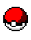

<ion-header [translucent]="true">
  <ion-toolbar>

    <div class="ion-flex ion-align-items-center ion-justify-content-center">
      <ion-thumbnail class="ion-flex ion-align-items-center">
          
      </ion-thumbnail>
      <ion-title class="ion-no-padding">Pokédex {{pokemonManagementService.typeSelected | titlecase}}</ion-title>
    </div>

    <ion-buttons slot="end">
      <ion-button (click)="openFilter()">
        <ion-icon slot="icon-only" name="filter-outline"></ion-icon>
      </ion-button>
    </ion-buttons>
  </ion-toolbar>
</ion-header>

<ion-content [fullscreen]="true">
  <ion-refresher slot="fixed" (ionRefresh)="refresh($event)">
    <ion-refresher-content></ion-refresher-content>
  </ion-refresher>
  
  <ion-header collapse="condense">
    <ion-toolbar>
      <div class="ion-flex ion-align-items-center ion-justify-content-center">
        <ion-thumbnail class="ion-flex ion-align-items-center">
            
        </ion-thumbnail>
        <ion-title class="ion-no-padding">Pokédex {{pokemonManagementService.typeSelected | titlecase}}</ion-title>
      </div>
      
      <ion-buttons slot="end">
        <ion-button (click)="openFilter()">
          <ion-icon slot="icon-only" name="filter-outline"></ion-icon>
        </ion-button>
      </ion-buttons>
    </ion-toolbar>
  </ion-header>
  <ng-container *ngIf="(pokemonManagementService.pokemons$ | async) as pokemons">
    <cdk-virtual-scroll-viewport itemSize="56" minBufferPx="900" maxBufferPx="1350">
      <ion-list>
        <app-item *cdkVirtualFor="let pokemon of pokemons; let indexp = index" [pokemon]="pokemon" [index]="indexp+1"></app-item>
      </ion-list>
    </cdk-virtual-scroll-viewport>
  </ng-container>
</ion-content>